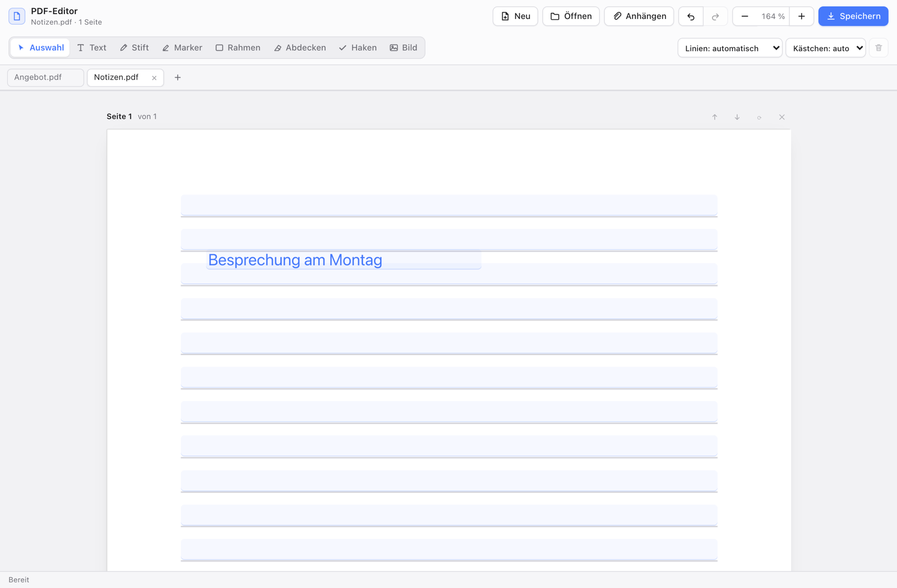

macOS
macOS 13 oder neuer
Beim ersten Start: Rechtsklick auf die App → Öffnen.
Desktop-App · 1.0.0
Formulare ausfüllen, unterschreiben, Passagen markieren und Seiten verwalten. Direkt auf dem Desktop – ohne Konto. Standardmäßig bleiben deine Dokumente lokal.

Download
Wähle die passende Version. Kein Konto, keine Registrierung. Der optionale KI-Assistent benötigt OpenCode.
macOS 13 oder neuer
Beim ersten Start: Rechtsklick auf die App → Öffnen.
Windows 10 und 11 · 64 Bit
Bei SmartScreen: Weitere Informationen → Trotzdem ausführen.
64-Bit-Distributionen
AppImage ausführbar machen: chmod +x PDF-Editor*.AppImage
Die macOS-App ist ad-hoc signiert, aber nicht notarisiert. Windows- und Linux-Builds sind nicht zertifiziert. Die Hinweise zur Installation gelten für den ersten Start.
Funktionen
Ein schlanker Desktop-Editor für Formulare, Notizen und Dokumente – mit den Werkzeugen, die du wirklich brauchst.
Formularfelder per Auftrag ausfüllen oder Text auf eine Seite schreiben – mit OpenCode und einem kostenlosen Modell, ohne Konto. Die KI ist optional und sendet nur nach ausdrücklicher Einwilligung PDF-Text an ein Cloud-Modell. Der normale Editor bleibt lokal.
Mehrere PDFs parallel öffnen. Jedes Dokument behält Verlauf, Zoom und Auswahl.
AcroForm-Felder erkennen und ausfüllen. Beim Speichern bleiben Textfelder, Auswahl und Checkboxen bearbeitbar.
Mit Stift und Marker unterschreiben, kommentieren oder Stellen hervorheben.
Fotos und Scans in A4-Seiten umwandeln. HEIC und TIFF werden direkt gelesen.
Seiten drehen, löschen, ergänzen und in der richtigen Reihenfolge speichern.
Bearbeiten und Speichern bleiben lokal. Nur die optionale KI überträgt nach deiner Einwilligung Text an ein Cloud-Modell.
Installation